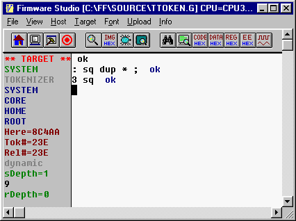

Firmware Studio Development Environment
| Host | Builder | Tester | Tokenizer | Forthing |
Forthing Interpreter
Forthing mode behaves a lot like traditional Forth. It has the feel of a Forth that's resident on the target board, but some processing is done on the host PC. The input stream (keyboard/file) is converted to tokenized code before being sent to the target board. This tokenized code, which is semantically equivalent to the text input, is processed by an evaluator on the target board.

You can enter tokenizer mode by pressing
 or by typing FI or
FORTHING. In tokenizer mode, the left margin displays the same
information as in tester mode. Unlike tester mode, you're not
allowed to alter the return stack. If you enter >R in forthing
mode, you'll probably crash the target board.
or by typing FI or
FORTHING. In tokenizer mode, the left margin displays the same
information as in tester mode. Unlike tester mode, you're not
allowed to alter the return stack. If you enter >R in forthing
mode, you'll probably crash the target board.
The Forthing interpreter is similar to the tokenizer interpreter except that it communicates with the target board. After tokenizing text input, it sends the tokenized code to the target board, to a location between the end of the dictionary and the lowest currently used point of the binding table. This is just a "safe", temporary location. Then it turns the target board's evaluator loose on this code.